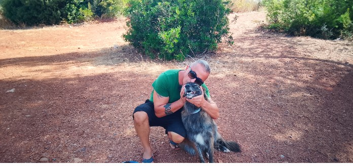
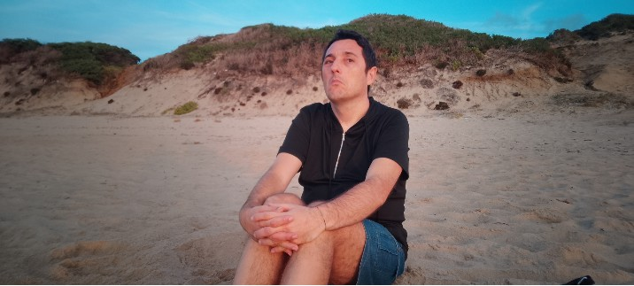

Benvenuto in Sardegna
Un viaggio tra mare cristallino, montagne, borghi antichi e cucina vera. Questo sito si apre da telefono e da computer, per tutti.
📷 LE MIE FOTO📷 LE MIE FOTO
Per aggiungere le tue foto: caricale su GitHub con il nome foto-1.jpg, foto-2.jpg, foto-3.jpg e appariranno qui.




Se non vedi foto, è normale: devi ancora caricarne una.
🏖️ Mare e Spiagge
Acqua trasparente, sabbia bianca e calette nascoste. Dalle spiagge dell'Iglesiente alle calette del sud Sardegna.
⛰️ Montagne
Sentieri, boschi, funghi e panorami. La Sardegna non è solo mare: dentro c'è un mondo di montagna da scoprire.
🏘️ Borghi
Paesi di pietra, vicoli, piazze e gente vera. I borghi dell'Iglesiente e del Sulcis raccontano la storia dei minatori e dei pastori.
🍝 Cucina
Pane, formaggi, pesce, dolci e vino. La cucina sarda è semplice e buona, fatta con quello che dà la terra e il mare.